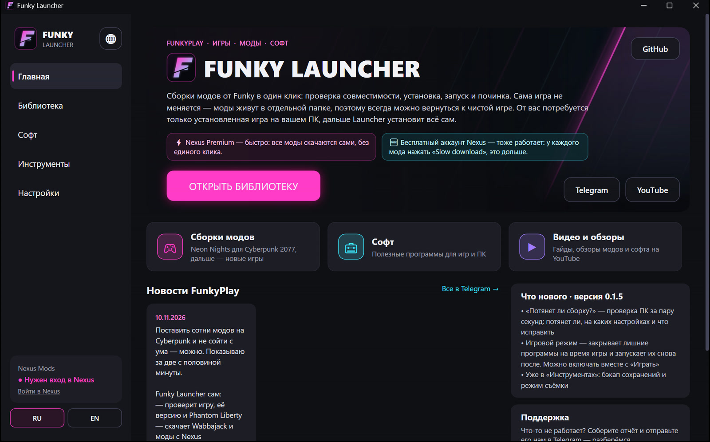
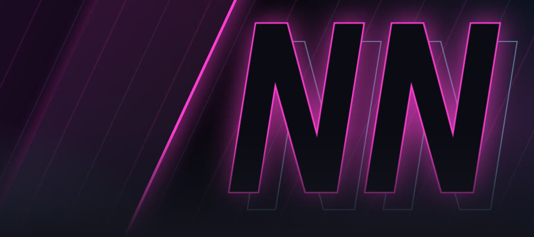
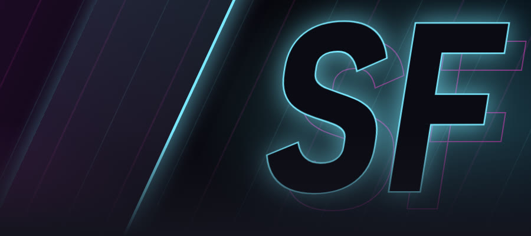
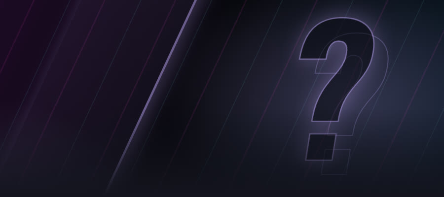
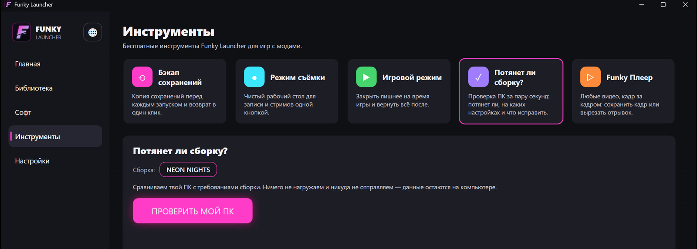

Моды для игр —
одной кнопкойGame mods —
one button
Funky Launcher сам проверит игру, скачает моды и поставит готовую сборку. Без «скачай, распакуй, вставь в папку». Сама игра не меняется — моды живут в отдельной папке.Funky Launcher checks your game, downloads the mods and installs a ready modlist by itself. No "download, unpack, drop into the folder". Your game stays untouched — mods live in their own folder.
⬇ Скачать бесплатноDownload free
Вечер инструкций или одна кнопкаAn evening of guides or one button
Обычный способThe usual way
- Найти сотни модов и нужные версии
- Скачать, распаковать, вставить в папку игры
- Докачать «мод для мода»
- Поставить менеджер модов, настроить
- Игра не запускается — искать, что сломалось
- Find hundreds of mods and the right versions
- Download, unpack, drop into the game folder
- Find the mods your mods need
- Install and configure a mod manager
- The game won't start — hunt for what broke
Funky Launcher
- Скачай лаунчер
- Выбери сборку в библиотеке
- Нажми «Установить» — лаунчер проверит игру и всё поставит
- Нажми «Играть»
- Download the launcher
- Pick a modlist in the library
- Press Install — the launcher checks the game and sets everything up
- Press Play
Разные игры. Один лаунчерDifferent games. One launcher

ДоступноAvailableCyberpunk 2077 2.5 + Phantom Liberty. Больше 400 модов: графика и погода, живой город, квартиры, машины, одежда, романы. Всё настроено и проверено.Cyberpunk 2077 2.5 + Phantom Liberty. 400+ mods: visuals and weather, a livelier city, apartments, cars, outfits, romances. Configured and tested.

В работеIn progressСледующая сборка.The next modlist.

В планахPlannedКакую игру собрать следующей — решаем вместе в Telegram.Which game is next — we decide together with the community.
Не только моды. БесплатноNot just mods. Free
Бэкап сохраненийSave backup
Копия сохранений перед каждым запуском и возврат в один клик. Мод испортил сохранение — вернул.A copy of your saves before every launch, with one-click restore.
Игровой режимGame mode
Закрывает браузер, торренты и лишнее на время игры, после — запускает снова.Closes your browser, torrent client and other apps while you play, then starts them again.
Потянет ли сборку?Can my PC run it?
Проверка ПК до установки: потянет ли, на каких настройках и что исправить.A PC check before you install: can it run the modlist, on which settings, and what to fix.
Режим съёмкиRecording mode
Чистый рабочий стол для записи и стримов одной кнопкой, второй — всё как было.A clean desktop for recording and streaming in one click.
Funky ПлеерPlayer
Любые видео кадр за кадром: сохранить кадр, вырезать отрывок из записи игры.Step through any video frame by frame: save a frame, cut a clip from your game recording.
СкороSoonFunky ПомощьHelp
Не ставится? Даёшь доступ одной кнопкой — и мы чиним. Только пока открыто окно.Won't install? Share access with one button and we'll fix it — only while the window is open.
СкороSoon
Честно и открытоHonest and open
Больше удобства — для тех, кто привыкMore comfort — for power users
Сборки, установка и поддержка всегда бесплатны. Pro — это дополнительные функции лаунчера и поддержка проекта. Цена появится к запуску.Modlists, installs and support are always free. Pro adds extra launcher features and helps support the project. The price will be announced at launch.
- Облачный бэкап сохранений на свой Яндекс Диск, Google Drive или OneDrive
- Бэкап во время игры и слоты прохождений
- Горячая клавиша и автоматика режима съёмки
- Свои рабочие столы со своими значками
- Авто-вертикалки для Shorts и TikTok из записей игр
- Cloud save backup to your own Google Drive, OneDrive or Yandex Disk
- Backups while you play and save slots per playthrough
- Hotkey and automation for recording mode
- Your own desktops with their own icons
- Automatic vertical clips for Shorts and TikTok
Частые вопросыFrequently asked
Это правда бесплатно?Is it really free?
Да. Лаунчер, сборки и поддержка — бесплатно. Платной будет только версия Pro с дополнительными инструментами, без неё всё работает.Yes. The launcher, modlists and support are free. Only Pro, with its extra tools, will be paid — everything works without it.
Нужен Nexus Premium?Do I need Nexus Premium?
Нет. Подойдёт бесплатный аккаунт Nexus Mods: у каждого мода нужно нажать «Slow download», это дольше. С Premium всё скачивается само.No. A free Nexus Mods account works — you press "Slow download" for each mod, and it takes longer. With Premium everything downloads by itself.
Windows пишет «Неизвестный издатель». Это безопасно?Windows says "Unknown publisher". Is it safe?
У лаунчера пока нет платной цифровой подписи. Код открыт на GitHub, а файл собирается из этого кода на серверах GitHub и проверяется по контрольной сумме. Нажми «Подробнее» → «Выполнить в любом случае».The launcher isn't code-signed yet. The code is open on GitHub, the file is built from it on GitHub's servers, and you can check it against the checksum. Click "More info" → "Run anyway".
Моя игра изменится?Will my game be changed?
Нет. Сборка ставится в отдельную папку и запускается через неё. Обычная игра остаётся как была.No. The modlist goes into its own folder and runs from there. Your normal game stays as it was.
Что если не запускается?What if it doesn't start?
Нажми «Собрать отчёт об ошибке» в лаунчере и отправь его в бот поддержки @FunkyLauncherBot — разберёмся.Press "Make an error report" in the launcher and send it to @FunkyLauncherBot — we'll sort it out.
Какие игры будут дальше?Which games are next?
Сейчас в работе Starfield, в планах The Witcher 3 и RDR2. Голосуем за следующую игру в Telegram @FunkyPlayTV.Starfield is in progress, The Witcher 3 and RDR2 are planned.
Хватит инструкций. ИграйEnough guides. Play
Скачай Funky Launcher и поставь первую сборку сегодня вечером.Download Funky Launcher and install your first modlist tonight.
⬇ Скачать бесплатноDownload free